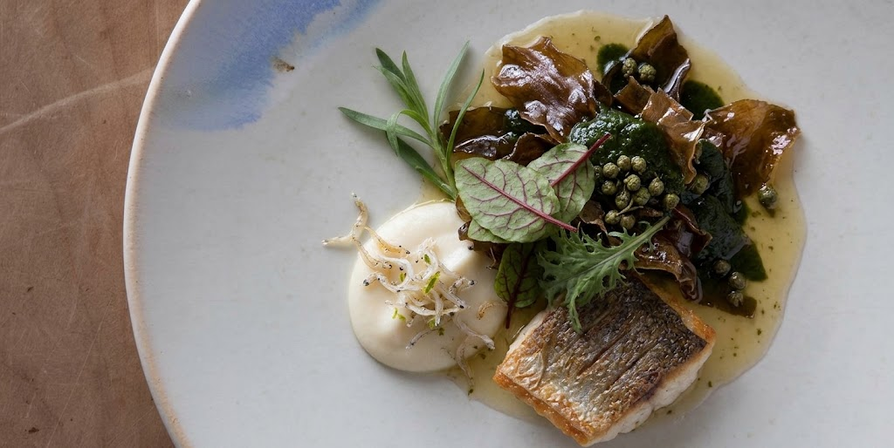
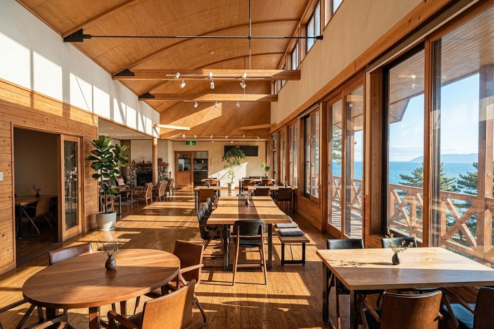
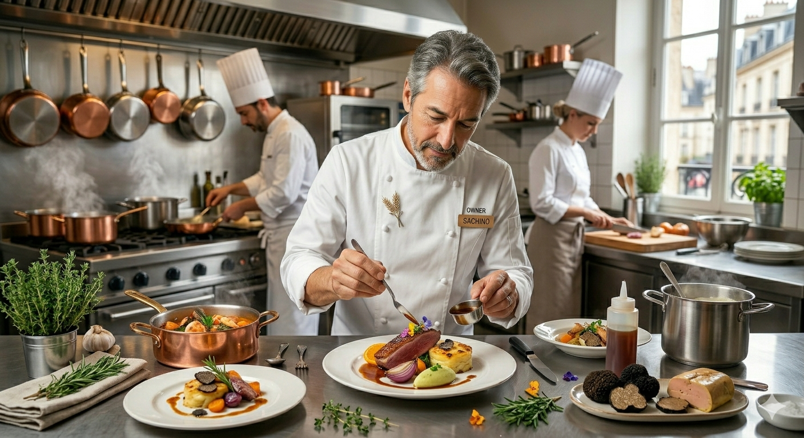

ここでしか味わえない、田野畑の食卓
人口約3,000人の小さな村で、地元の食材だけで新しい食文化をつくる。その挑戦が、一皿ずつに表れています。
地元食材へのこだわり
田野畑村の海・里・山の食材をふんだんに使い、新しい田野畑の食文化を発信しています。
確かな腕のシェフ
農林水産省「料理マスターズ」の受賞歴を持つシェフが、三陸の食材をフレンチベースの洗練された料理にします。
太平洋を望む絶景
断崖の突端に建ち、大きな窓から太平洋の雄大な景色が広がります。景色も食事の一部です。
完全予約制の落ち着いたサービス
ランチ・ディナーともコース料理のみ。シェフとマダムの二人三脚で、ていねいにおもてなしします。

ワカメと水だこ、
三陸の宝石をコースで
シェフが絶賛する田野畑のワカメを主役に、イチオシの水だこをあわせて。海の味を感じる前菜からデザートまで、季節の食材でコースを組み立てます。
南部鉄器で旨味を引き出す調理や、地元ワインの搾りかすに漬ける工夫など、食材の価値を引き出す独自の技法も特徴です。
窓いっぱいの太平洋

断崖の突端にある店内から、海を眺めながらゆっくりと食事をお楽しみいただけます。ご家族の記念日や大切な方との時間にも。
シェフ 伊藤勝康
1963年千葉県生まれ。東京のレストランで修業を積み、1995年に岩手へ移住。2016年に田野畑村で「ロレオール田野畑」を開業しました。
三陸の食材に感動し、フレンチの枠にとらわれない料理で地域活性化にも取り組んでいます。「三ッ星レストランのような店」を目指し、この村で挑戦を続けています。
- 1995岩手県前沢に移住。前沢牛のレストランでシェフに
- 2000出張料理「ロレオール丘」を始める
- 2014花巻市の石黒農場内に古民家レストランを開業
- 2016田野畑村に移転し「ロレオール田野畑」を開業
- 2017農林水産省「料理マスターズ」シルバー賞を受賞

お客様の声
予約必須です。北三陸の食材を使ったフレンチ料理をいただきました。海の味を感じる前菜から始まり、初めて食べる食材もありましたが、どれも美味しくいただきました。お皿も素敵で、シェフのこだわりを感じることができました。デザートを含む全9品を堪能し、お腹も大満足でした。家族で素敵な思い出ができた場所です。
Googleマップのクチコミよりお料理は、前菜からデザートまで美味しくいただきました。季節の海の物や山の物を使い、見た目も美味しく、塩麹なども使ったお味でした。予約の時に1人お肉が食べられないと伝えてあったところ、メインの鳥料理が2皿あり、お伝えすると即対応していただきました。
Googleマップのクチコミより（一部抜粋）地元農家での収穫体験と、お食事のセット
田野畑の畑で収穫した野菜を、そのままコース料理でいただく。親子やご友人など、少人数のグループ向けのプランを準備しています。詳細が決まりましたら、こちらでお知らせします。
アクセス
- 店名
- ロレオール田野畑
- 住所
- 〒028-8402 岩手県下閉伊郡田野畑村明戸309-5
- 電話
- 080-9014-9000
- 定休日
- 不定休
- ご利用
- 完全予約制（ランチ・ディナーともコース料理のみ）
- 代表者
- 伊藤勝康（個人経営）